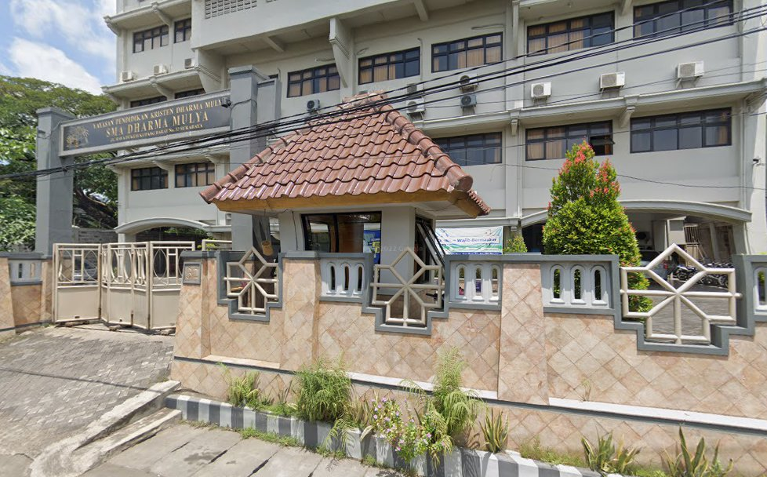
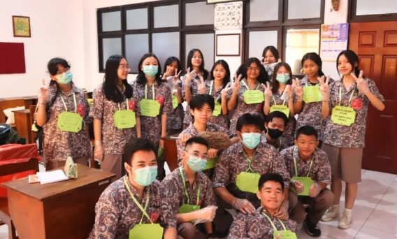

SMA DHARMA MULYA SURABAYA
Sejarah Sekolah
SMA Dharma Mulya Surabaya berdiri pada tahun 1985 dengan visi untuk menjadi lembaga pendidikan Kristen yang unggul dalam iman, ilmu, dan pelayanan. Berawal dari sebuah bangunan sederhana, sekolah ini tumbuh dan berkembang berkat dedikasi para pendiri dan dukungan penuh dari komunitas.
Dengan komitmen untuk membentuk generasi yang tidak hanya cerdas secara akademis tetapi juga berkarakter mulia, kami terus berinovasi dalam kurikulum dan fasilitas. Kini, SMA Dharma Mulya dikenal sebagai salah satu sekolah terdepan di Surabaya yang menghasilkan lulusan-lulusan berprestasi dan siap menghadapi tantangan global.
Perjalanan kami adalah bukti nyata dari penyertaan Tuhan dan kerja keras seluruh civitas academica. Kami percaya bahwa setiap siswa adalah pribadi unik yang berharga, dan tugas kami adalah membantu mereka menemukan dan mengembangkan potensi terbaiknya.

Hymne Dharma Mulya

Dharma Mulya sekolah kami
Tempat kami menimba ilmu
Berlandaskan kasih ilahi
Menuju masa depan cerah.
Dengan iman, hati, dan tangan
Kami berkarya bagi bangsa
Menjadi terang dan harapan
Jayalah s'lalu Dharma Mulya.
Semboyan 4G Dharma Mulya
Semboyan 4G adalah pilar yang menopang seluruh kegiatan pendidikan dan pembentukan karakter di Dharma Mulya, yaitu Grow, Glow, Give, and Great.
GROW
Terus bertumbuh dalam pengetahuan, iman, dan karakter untuk mencapai potensi maksimal yang Tuhan berikan.
GLOW
Memancarkan cahaya kebaikan, integritas, dan menjadi teladan positif di tengah masyarakat.
GIVE
Memberi dengan tulus, melayani sesama, dan berkontribusi secara aktif bagi lingkungan sekitar.
GREAT
Berusaha mencapai keunggulan dalam segala bidang untuk memuliakan Tuhan dan menjadi berkat bagi dunia.